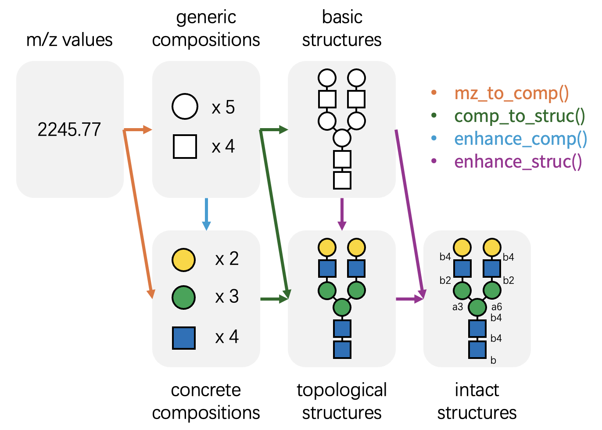
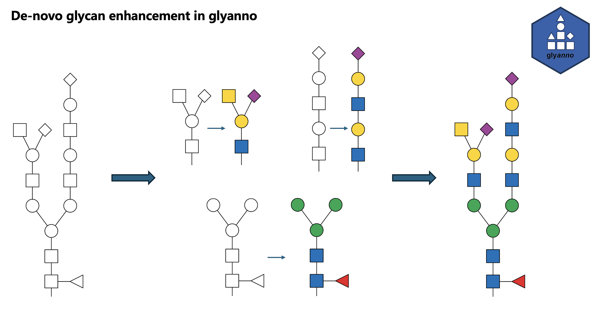

Get Started with glyanno
glyanno.RmdThe Challenge
Mass spectrometry-based glycomics and glycoproteomics often yield data with limited structural resolution. For example, MALDI-TOF MS-based glycomics typically provides only m/z values, while many LC-MS/MS-based glycoproteomics workflows identify basic glycan compositions but lack isomer specificity. Mass spectrometry alone frequently fails to distinguish specific monosaccharide isomers (e.g., differentiating Mannose from Galactose), or resolve linkage details (e.g., a1-3 vs b1-4).
In theory, full structural resolution is achievable by combining MS with orthogonal techniques such as enzymatic digestion or NMR; however, these approaches are often resource-intensive and time-consuming. Unfortunately, advanced downstream analyses—such as the glycan biosynthetic pathway reconstruction offered by glyenzy— require fully resolved glycan structures, including specific monosaccharide identities and linkage information.
What is glyanno?
glyanno bridges this gap. This package is designed to
maximize the utility of your mass spectrometry data by annotating it
with probable biological context derived from knowledge bases. The
package features four core functions:
-
mz_to_comp(): Identifies possible glycan compositions from m/z values. -
comp_to_struc(): Maps glycan compositions to potential glycan structures. -
enhance_comp(): Refines generic glycan compositions into concrete, monosaccharide-specific compositions. -
enhance_struc(): Resolves low-resolution glycan structures into high-resolution structures with linkage information.

Note: This package relies on glyrepr and glydb. We recommend
familiarizing yourself with these packages, especially
glyrepr, before using glyanno. Additionally, a
basic understanding of IUPAC-condensed notation is recommended for this
vignette. You can refer to this tutorial.
Workflow: M/z -> Composition -> Structure
Let’s demonstrate these functions step-by-step, starting with a single m/z value.
mz_to_comp(406.1325, charge = 1, adduct = "Na+")
#> # A tibble: 4 × 3
#> mz composition confidence
#> <dbl> <comp> <dbl>
#> 1 406. Gal(1)GalNAc(1) 5.32
#> 2 406. Gal(1)GlcNAc(1) 2.71
#> 3 406. Glc(1)GlcNAc(1) 0.693
#> 4 406. Man(1)GlcNAc(1) 2.08This returns every composition in glydb matching the m/z
of 406.1325. In practice, returning “all” possibilities can be
overwhelming; you will often want to constrain the search space based on
biological context.
glydb provides helper functions to filter the database.
For example, you might want to limit the search to only human O-GalNAc
glycans.
my_db <- glydb_compositions(species = "Homo sapiens", glycan_type = "O-GalNAc")
my_db
#> <glycan_composition[159]>
#> [1] Gal(1)GalNAc(1)
#> [2] Gal(1)GlcNAc(1)GalNAc(1)
#> [3] GlcNAc(1)GalNAc(1)
#> [4] GlcNAc(2)GalNAc(1)
#> [5] GalNAc(2)
#> [6] Gal(1)GlcNAc(1)GalNAc(1)Neu5Ac(1)
#> [7] Glc(1)Gal(2)GalNAc(1)
#> [8] Gal(2)GlcNAc(1)GalNAc(1)Neu5Ac(1)
#> [9] Gal(1)GalNAc(2)Neu5Ac(2)
#> [10] Gal(1)GalNAc(1)Fuc(1)
#> ... (149 more not shown)my_db is simply a
glyrepr::glycan_composition() vector. You can pass it to
the db argument of mz_to_comp() to filter
results.
mz_to_comp(406.1325, charge = 1, adduct = "Na+", db = my_db)
#> # A tibble: 1 × 3
#> mz composition confidence
#> <dbl> <comp> <dbl>
#> 1 406. Gal(1)GalNAc(1) 5.32The results are now significantly more relevant to our specific context.
With the composition identified, we can proceed to determine potential structures. The m/z value 406.1325 corresponds to the composition Gal(1)GalNAc(1). What are the possible structures for this composition?
struc_db <- glydb_structures(species = "Homo sapiens", glycan_type = "O-GalNAc")
comp_to_struc("Gal(1)GalNAc(1)", db = struc_db)
#> # A tibble: 3 × 3
#> composition structure confidence
#> <comp> <struct> <dbl>
#> 1 Gal(1)GalNAc(1) Gal(b1-3)GalNAc(a1- 5.32
#> 2 Gal(1)GalNAc(1) Gal(b1-3)GalNAc(b1- 1.10
#> 3 Gal(1)GalNAc(1) Gal(a1-3)GalNAc(a1- 1.61Note that here we use glydb_structures() instead of
glydb_compositions() to create a structure-specific
database.
Two structures are possible, one is Core 1, the other is Core 5.
Sometimes we just want a “most possible” result. In this case, you can
set return_best to TRUE:
comp_to_struc("Gal(1)GalNAc(1)", db = struc_db, return_best = TRUE)
#> <glycan_structure[1]>
#> [1] Gal(b1-3)GalNAc(a1-
#> # Unique structures: 1Core 1 is more common than Core 5, so it was kept. The function keeps the structure with most citations for multiple matches.
Note that when return_best = TRUE, the function returns
a vector with the same length of the input instead of a tibble. When a
glycan has no matches, <NA> will be on the
corresponding position.
Note that all functions in glyanno works
vectorizedly:
comp_to_struc(c("Gal(1)GalNAc(1)", "GlcNAc(1)GalNAc(1)"), db = struc_db, return_best = TRUE)
#> <glycan_structure[2]>
#> [1] Gal(b1-3)GalNAc(a1-
#> [2] GlcNAc(b1-3)GalNAc(a1-
#> # Unique structures: 2If you set return_best to TRUE, the
function directly returns a vector:
comp_to_struc(c("Gal(1)GalNAc(1)", "GlcNAc(1)GalNAc(1)"), db = struc_db, return_best = TRUE)
#> <glycan_structure[2]>
#> [1] Gal(b1-3)GalNAc(a1-
#> [2] GlcNAc(b1-3)GalNAc(a1-
#> # Unique structures: 2This vector always has the same length as the input, with
NA for glycans with no match.
One last thing to mention before we move on is that you can set
custom structure levels for db. For example, it is possible
to use a database with only topology-level structures without linkage
information.
struc_db <- glydb_structures(
structure_level = "topological",
species = "Homo sapiens",
glycan_type = "O-GalNAc"
)
comp_to_struc(c("Gal(1)GalNAc(1)", "GlcNAc(1)GalNAc(1)"), db = struc_db)
#> # A tibble: 2 × 3
#> composition structure confidence
#> <comp> <struct> <dbl>
#> 1 Gal(1)GalNAc(1) Gal(??-?)GalNAc(??- 5.32
#> 2 GlcNAc(1)GalNAc(1) GlcNAc(??-?)GalNAc(??- 2.77Enhancing Compositions and Structures
Researchers often need to refine generic annotations into more
specific ones. For instance, you may wish to convert generic
compositions into specific monosaccharide lists, or assign potential
linkages to a topology-only structure. enhance_comp() and
enhance_struc() are designed for this purpose.
Both functions return a tibble with two columns: raw
(the original input) and enhanced (the potential
high-resolution candidates).
enhance_comp("Hex(1)HexNAc(1)")
#> # A tibble: 4 × 3
#> raw enhanced confidence
#> <comp> <comp> <dbl>
#> 1 Hex(1)HexNAc(1) Gal(1)GalNAc(1) 5.32
#> 2 Hex(1)HexNAc(1) Gal(1)GlcNAc(1) 2.71
#> 3 Hex(1)HexNAc(1) Glc(1)GlcNAc(1) 0.693
#> 4 Hex(1)HexNAc(1) Man(1)GlcNAc(1) 2.08
enhance_struc("Gal(??-?)GalNAc(??-")
#> # A tibble: 9 × 3
#> raw enhanced confidence
#> <struct> <struct> <dbl>
#> 1 Gal(??-?)GalNAc(??- Gal(b1-3)GalNAc(a1- 5.32
#> 2 Gal(??-?)GalNAc(??- Gal(b1-3)GalNAc(b1- 1.10
#> 3 Gal(??-?)GalNAc(??- Gal(a1-3)GalNAc(b1- -1
#> 4 Gal(??-?)GalNAc(??- Gal(b1-4)GalNAc(b1- -1
#> 5 Gal(??-?)GalNAc(??- Gal(a1-6)GalNAc(a1- -1
#> 6 Gal(??-?)GalNAc(??- Gal(b1-6)GalNAc(a1- -1
#> 7 Gal(??-?)GalNAc(??- Gal(b1-6)GalNAc(b1- -1
#> 8 Gal(??-?)GalNAc(??- Gal(a1-3)GalNAc(a1- 1.61
#> 9 Gal(??-?)GalNAc(??- Gal(b1-4)GalNAc(a1- -1Similarly, providing a custom database will narrow down the results to biologically relevant candidates.
enhance_comp("Hex(1)HexNAc(1)", db = glydb_compositions(species = "Homo sapiens", glycan_type = "O-GalNAc"))
#> # A tibble: 1 × 3
#> raw enhanced confidence
#> <comp> <comp> <dbl>
#> 1 Hex(1)HexNAc(1) Gal(1)GalNAc(1) 5.32
enhance_struc("Gal(??-?)GalNAc(??-", db = glydb_structures(species = "Homo sapiens", glycan_type = "O-GalNAc"))
#> # A tibble: 3 × 3
#> raw enhanced confidence
#> <struct> <struct> <dbl>
#> 1 Gal(??-?)GalNAc(??- Gal(b1-3)GalNAc(a1- 5.32
#> 2 Gal(??-?)GalNAc(??- Gal(b1-3)GalNAc(b1- 1.10
#> 3 Gal(??-?)GalNAc(??- Gal(a1-3)GalNAc(a1- 1.61You can set return_best to TRUE as
well.
enhance_struc(
"Gal(??-?)GalNAc(??-",
db = glydb_structures(species = "Homo sapiens", glycan_type = "O-GalNAc"),
return_best = TRUE
)
#> <glycan_structure[1]>
#> [1] Gal(b1-3)GalNAc(a1-
#> # Unique structures: 1De novo enhancement of N-glycans
N-glycans have many possible branching patterns, but databases of
human- detected glycans cover only a fraction of this potential
structure space. enhance_struc_denovo() reconstructs
generic topological N-glycans from their conserved core and branches,
returning one concrete topological candidate per input. It preserves
optional core fucose and bisecting GlcNAc residues. Inputs that cannot
be reconstructed are matched against a topological fallback
database.

glycan <- "NeuAc(??-?)Hex(??-?)HexNAc(??-?)Hex(??-?)HexNAc(??-?)Hex(??-?)[HexNAc(??-?)[NeuAc(??-?)]Hex(??-?)HexNAc(??-?)Hex(??-?)]Hex(??-?)HexNAc(??-?)[dHex(??-?)]HexNAc(??-"
enhance_struc_denovo(glycan)
#> <glycan_structure[1]>
#> [1] Neu5Ac(??-?)Gal(??-?)GlcNAc(??-?)Gal(??-?)GlcNAc(??-?)Man(??-?)[Neu5Ac(??-?)[GalNAc(??-?)]Gal(??-?)GlcNAc(??-?)Man(??-?)]Man(??-?)GlcNAc(??-?)[Fuc(??-?)]GlcNAc(??-
#> # Unique structures: 1All non-missing inputs to enhance_struc_denovo() must
contain only generic residues and must be topological. Missing values
are allowed and preserved.
Bidirectional Conversion
While glyanno focuses on inferring high-resolution
information from low-resolution data, the glycoverse
ecosystem also provides complementary functions to perform the reverse
operations—simplifying detailed structures back to their
lower-resolution representations.
A summary of these relationships: